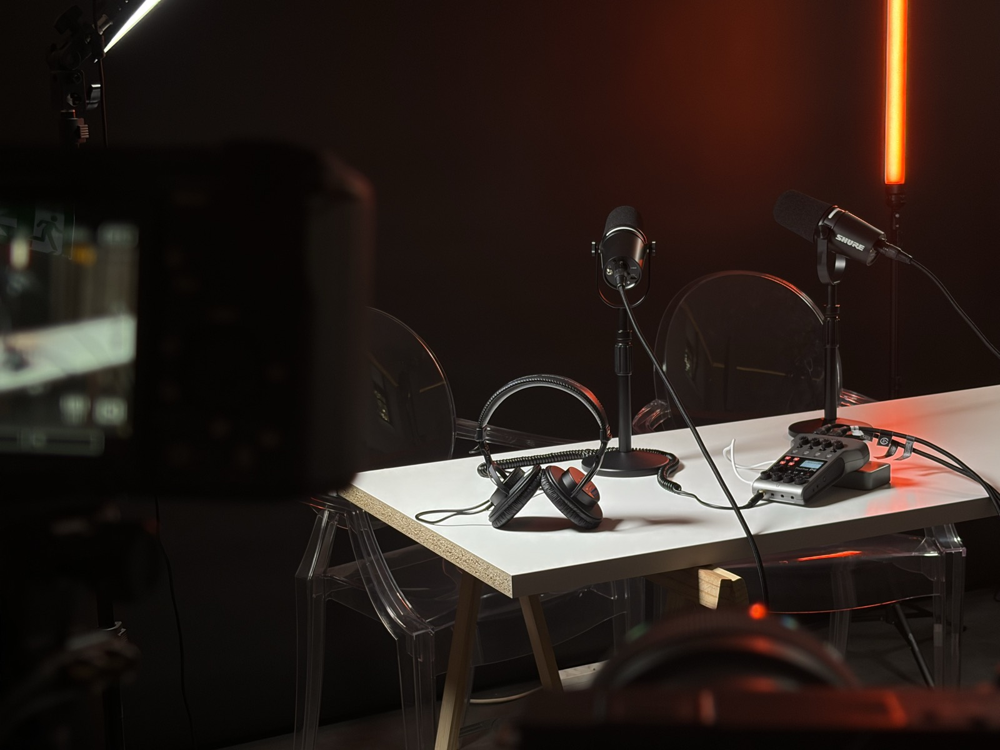

Découvrez comment le podcast vous permet de transformer votre voix en clients, en talents et en opportunités.
Sources : Kodea, Les Makers, PodcastNews.fr (2025-2026)
Le web se noie sous le contenu généré par IA. Les entreprises qui gardent une voix humaine prennent une avance mesurable, en confiance, en clients et en talents.
Le format court attire l'attention. Le format long la transforme en confiance, et c'est cette confiance qui fait acheter, recruter et fidéliser.
Génère de la reconnaissance et sert de point d'entrée. S'oublie aussi vite qu'il se consomme.
Construit la crédibilité et installe une relation durable avec l'audience.
Sources : Sounds Profitable & Edison Research, Spotify Advertising, Audacy (2022-2026)
Le web se remplit de contenu généré par IA. Une voix humaine reconnaissable est devenue l'un des actifs les plus rares, et les mieux valorisés.
Sources : Ahrefs, Stanford Internet Observatory (2025-2026)
Sources : Edelman × LinkedIn, HubSpot (2026)
Le podcast fait partie des canaux prioritaires pour le personal branding en 2026, aux côtés de LinkedIn et de la newsletter. Un format long, incarné, difficile à reproduire par une IA.
Ce n'est pas une mode : c'est un marché qui grandit chaque année, en France comme dans le monde.
Part des Français qui écoutent des podcasts régulièrement
Source : Les Makers (2026)
Marché publicitaire podcast, États-Unis
Source : IAB (2026)
Les décideurs sont déjà à l'écoute, souvent sur leurs temps morts : transports, sport, déplacements.
Sources : illustre!, Onetwo (2025-2026)
Ce n'est plus un simple format média : c'est un outil de communication à part entière, utilisé aussi bien en interne qu'à l'externe.
En interne
Expliquer les décisions, clarifier les arbitrages, faire circuler l'information sans la déformer.
Montrer les métiers, les parcours et la culture d'entreprise pour attirer et retenir les talents.
En externe
Construire une expertise reconnue et gagner la confiance de votre audience sur la durée.
Nourrir la relation avec vos clients entre deux achats, rester présent dans leur quotidien.
Ouvrir des conversations commerciales autrement, sans discours de vente direct.
Novembre vous accompagne dans cette aventure.
Un studio insonorisé, avec micros, caméras, éclairage et mixette inclus.

Traitement acoustique pensé pour la voix : pas de bruit de fond, pas d'écho à corriger.
Table, fauteuils et arrière-plan pensés pour un format à 2, 3 ou 4 personnes face caméra.
Micros cravate ou statiques selon le format, un par intervenant, réglés en amont du tournage.
Plusieurs caméras positionnées pour varier les angles sans interrompre la conversation.
Éclairage LED et softbox déjà positionnés pour un rendu net, sans ombre parasite.
Contrôle des niveaux en direct et retour casque pour chaque intervenant pendant l'enregistrement.
Le studio et le matériel sont sur place, réglés et prêts à l'usage le jour du tournage.
Notre équipe vient enregistrer directement dans vos locaux, avec tout le matériel nécessaire.
Notre équipe vient directement dans vos bureaux, sans contrainte d'agenda studio.
Micros, caméras et éclairage installés rapidement, sans perturber votre activité.
Micros cravate ou statiques selon le format, un par intervenant, réglés en amont du tournage.
Plusieurs caméras positionnées pour varier les angles sans interrompre la conversation.
Éclairage LED et softbox transportés et positionnés sur place pour un rendu net.
Contrôle des niveaux en direct et retour casque pour chaque intervenant pendant l'enregistrement.
Le matériel est transporté et installé chez vous, réglé et prêt à l'usage le jour du tournage.
Le vidéaste de l'agence en renfort pour la prise de vue pendant l'enregistrement.
Le montage complet de l'épisode, du dérushage à la post-production son. Comptez environ 8 heures de montage par heure de vidéo finale.
Une identité sonore créée et enregistrée sur mesure, utilisée en intro et outro de chaque épisode.
Les visuels adaptés à chaque plateforme, pour un podcast reconnaissable partout où il est publié.
Visuel carré pour Spotify, Deezer, Apple Podcasts et Amazon Music, cohérent sur tous les épisodes.
Format 16:9 pensé pour capter le clic dans un fil de recommandations.
Chaque épisode adapté à sa plateforme de destination, puis mis en ligne.
| Plateforme | Format | Contenu publié |
|---|---|---|
| Spotify | Audio | Épisode complet |
| Deezer | Audio | Épisode complet |
| Apple Podcasts | Audio | Épisode complet |
| Amazon Music | Audio | Épisode complet |
| YouTube | Vidéo horizontale | Épisode complet |
Chaque épisode est décliné et publié automatiquement sur toutes les plateformes choisies.
Des campagnes publicitaires ciblées sur YouTube ou Instagram. On active le ou les leviers utiles selon votre objectif, pas un parcours imposé.
| Levier | Ce que ça fait |
|---|---|
| Notoriété | Faire découvrir le podcast à de nouvelles audiences |
| Considération | Recibler les audiences qui ont déjà vu du contenu, pour les faire revenir |
| Conversion | Transformer les vues en leads, abonnés ou clients |
Un point de suivi après chaque diffusion : ce qui a été vu, écouté et partagé.
Volume par plateforme, pour situer chaque épisode par rapport aux précédents.
Temps moyen passé sur l'épisode, en audio comme en vidéo.
Comparatif entre Spotify, Deezer, Apple Podcasts, Amazon Music et YouTube.
Le forfait de base : location de la salle et du matériel, vidéaste et montage.Le forfait de base : déplacement, matériel, vidéaste et montage. Jingle, visuels, diffusion et suivi sont proposés en option.
Les éléments qu'on met à votre disposition